A fall porch that looks great on day one and falls apart by week three isn't actually styled, it's just decorated.
The difference comes down to a handful of choices made upfront: palette, layering, and what the weather is actually going to do to everything sitting outside.
This covers both the styling and the practical side that keeps it looking good through the whole season.

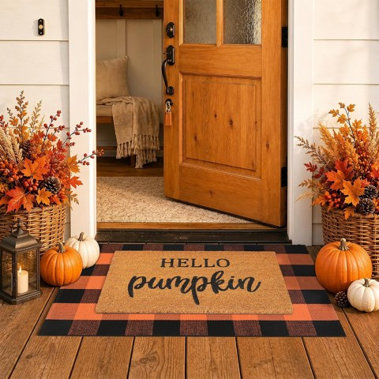
Fall Door Mat Combo Set, Coco Coir Welcome Mat with 28 x 43 Inch Plaid Rug
Shop on Amazon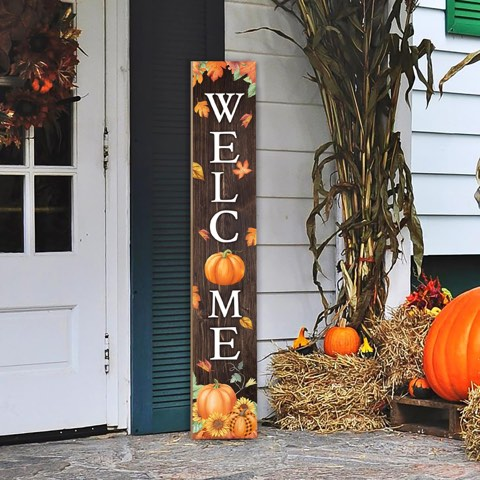
Fall Welcome Sign for Front Porch, Maple Leaf Pumpkin Sunflower Thanksgiving Decor
Shop on Amazon1. Carrying It Through Halloween and Into Winter
A few spooky accents layered onto the existing fall base cover Halloween without needing an entirely separate decor set.
Keeping the base layer, palette, lighting, seating, consistent and swapping only the smaller seasonal accents makes the transition into winter decor far less work later.
Choosing weatherproof materials from the start pays off here too, since the same durable pieces carry through multiple seasonal refreshes.
2. Keeping It Looking Good All Season
Real pumpkins and gourds eventually soften and need swapping out; faux versions last the whole season without any maintenance at all.
A quick reset every couple of weeks, fluffing cushions, replacing a wilted stem, wiping down furniture, keeps the porch from visibly aging before the season does.
Budget-friendly swaps, like repainting an old planter or repurposing last year's decor in a new arrangement, stretch a smaller budget across the whole season.
3. Keep the Walkway Clear
A gorgeous porch that's also a tripping hazard isn't actually finished, especially once evenings get darker earlier in the season.
Leaving a clear, direct path to the door, keeping pumpkins, planters, and decor along the edges rather than in the walking line, matters more than it sounds like it should.
This is the easiest thing to overlook while focused on how everything looks instead of how it functions.
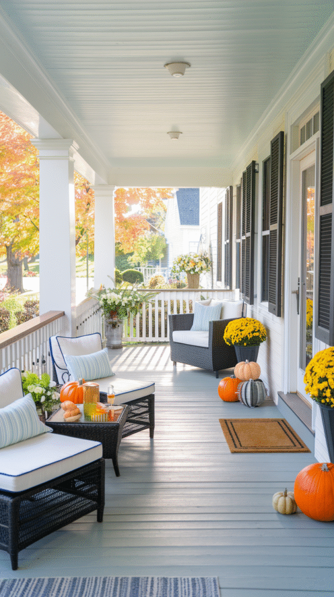
4. Add Textures You'll Actually Use
A chunky throw blanket, a textured outdoor rug, a few weatherproof pillows, cozy textures should be genuinely usable, not just styled for a photo.
This is what turns a decorated porch into a porch people actually want to sit on.
Washable or weather-resistant fabric matters more here than the exact pattern or color.
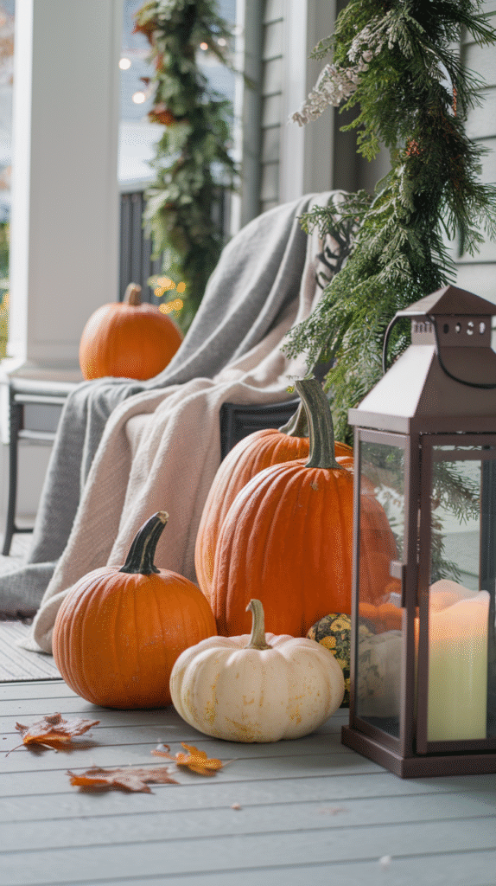

5. Make the Front Door the Star
A seasonal wreath, a pair of flanking planters, and maybe a doormat that actually matches the palette turn the door into the porch's natural focal point.
Everything else on the porch should support the door, not compete with it for attention.
This is often the highest-impact single area to style carefully, since it's also what guests see first.
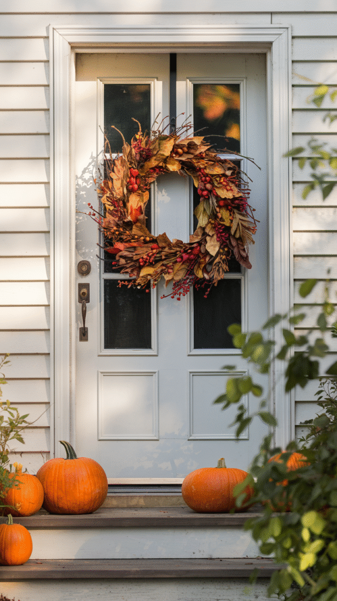

6. Light It for Evenings, Not Just Daylight Photos
Warm string lights, a lantern or two, and a well-lit front door all extend the porch's good looks well past sunset.
Fall evenings get dark early, which makes this more important here than for a spring or summer porch refresh.
A porch that only looks good in daylight photos isn't actually finished.
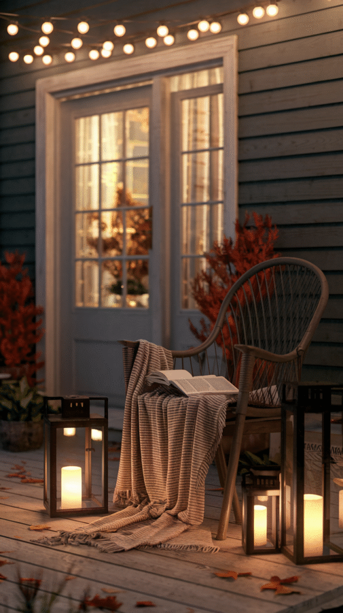

7. Bring in Real Natural Texture
Corn stalks, potted mums, a few gourds, a scattering of real or high-quality faux leaves, natural texture does more for a fall porch than anything plastic-looking from a big-box clearance aisle.
A mix of heights and textures here mirrors the layering principle elsewhere, just with organic materials specifically.
This is one of the most recognizable fall signals, and one of the easiest to overdo if every single element is competing for attention.
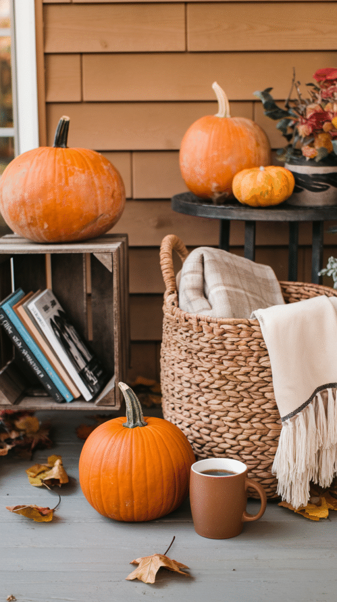
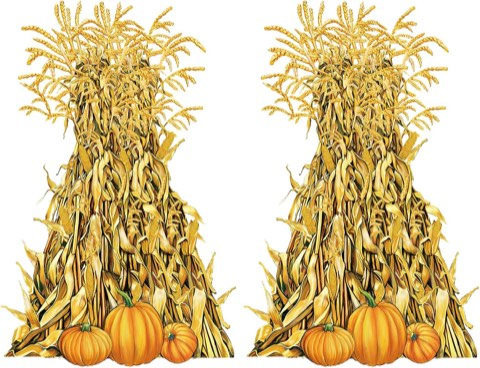
Fanfanwin Corn Stalks Decorations, 2 Pcs, Thanksgiving Fall Party Decor
Shop on Amazon8. Layer Decor for Real Depth
A porch with everything at one height reads as flat, no matter how good the individual pieces are.
Varying heights, a tall planter, a mid-height pumpkin stack, a low lantern, gives the eye somewhere to travel instead of landing on one flat plane.
The goal is for the eye to move from the ground up to the door without hitting any obviously empty gaps.
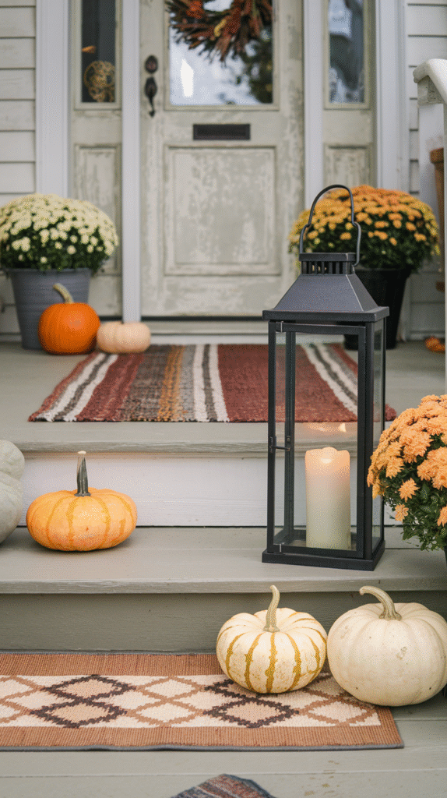
Hodao Stacked Pumpkins Figurine, 9.5 Inch, Fall Porch Decor
Shop on Amazon9. Choose Seating That Can Actually Take the Weather
A porch swing, a couple of weather-rated chairs, or a simple bench all work, as long as the materials are actually rated for outdoor use.
A few weatherproof cushions in the season's palette turn basic seating into something that looks intentional rather than functional-only.
This is worth getting right before any decor goes up, the seating is what makes the porch usable, not just photogenic.
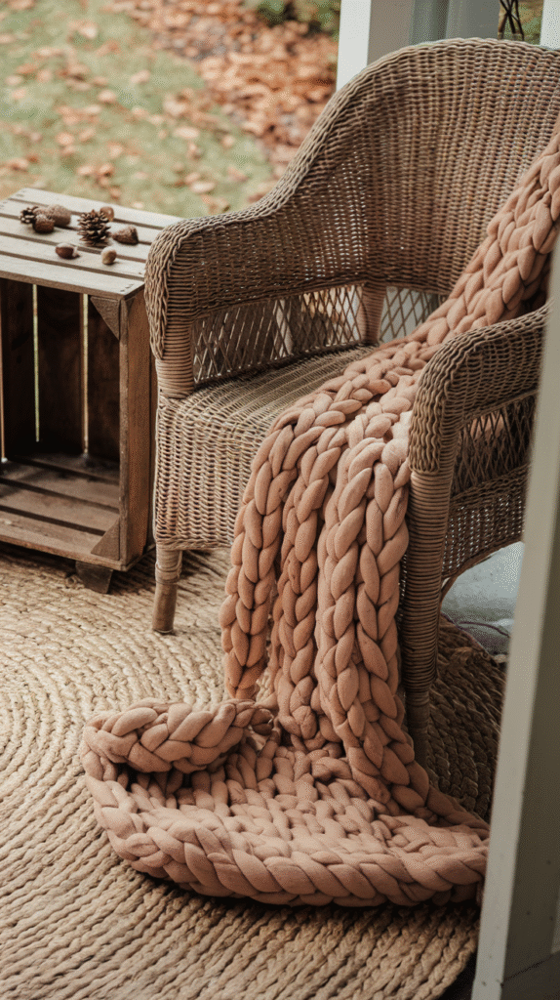
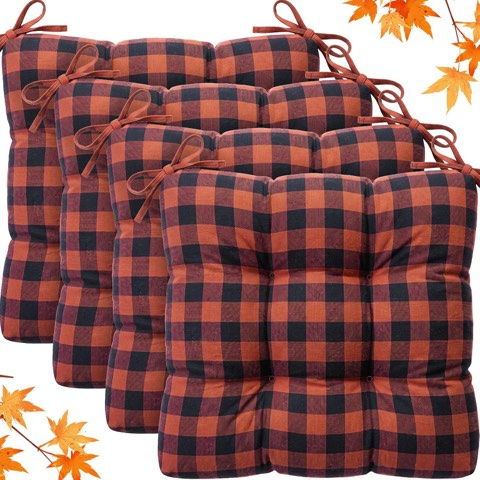
Geetery Plaid Chair Cushions with Ties, 4 Pack, Orange and Black, 16 x 15 Inch
Shop on Amazon10. Pick a Palette That's Actually Yours
Classic orange and rust work, but they're not mandatory, a muted sage-and-cream fall palette or a deep burgundy-and-brass one both read as seasonal without looking like every other porch on the block.
Picking two or three colors and sticking to them across every element keeps the whole porch cohesive instead of scattered.
This decision shapes every other choice on this list, so it's worth making first.
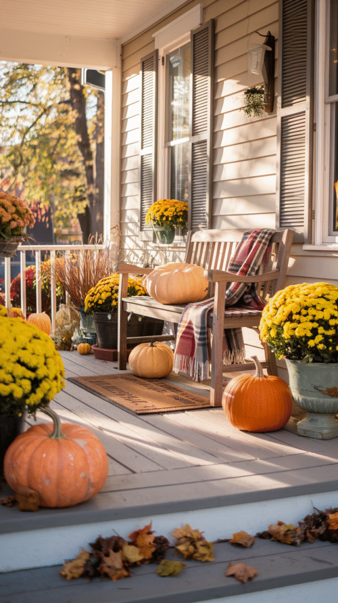
DERAYSION Stainless Steel Glass Solar Pathway Lights, 8 Pack
Shop on AmazonKOL 15 Inch Tall Beige Plastic Urn Planters, 2 Pack
Shop on Amazon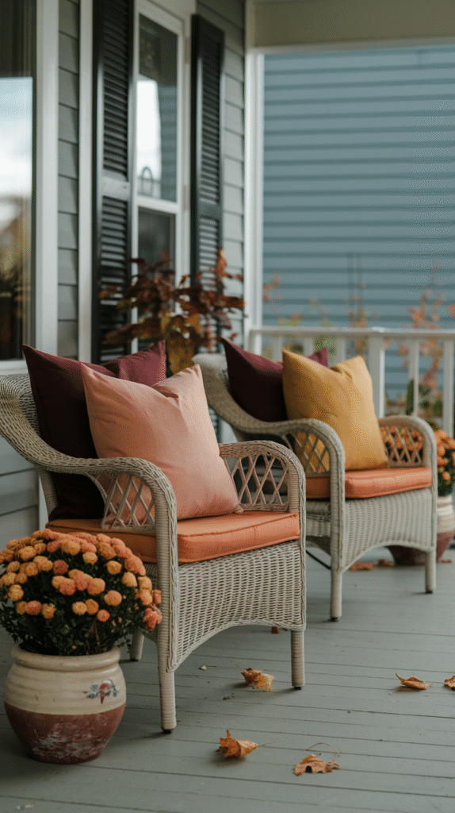
Your Fall Porch, Your Rules
None of these choices need to happen all at once or exactly in this order.
Start with the palette and the seating, then layer in natural texture, lighting, and the smaller details as time and budget allow.
A fall porch that actually holds up all season comes down to a few deliberate choices upfront, not a single big decorating day.
Get those right, and the porch keeps looking considered straight through to the first snow.